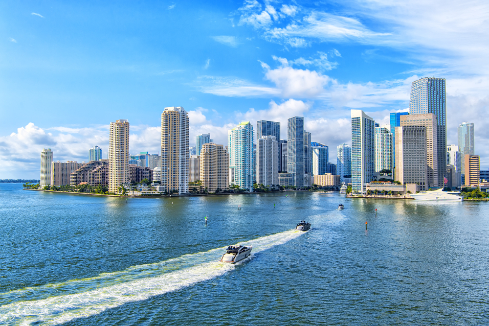

Ibiza vs. Miami: Which is the Ultimate Yachting and Nightlife Destination?
By Yachts Zenith, 22.02.2024
Introduction
In the high-stakes world of luxury yachting and unparalleled nightlife, two powerhouses stand out: Miami, with its neon-lit skyline and pulsating beats, and Ibiza, the Mediterranean's crown jewel of party culture. As aficionados of the finer things in life seek the ultimate destination, a closer examination reveals why Ibiza might just edge out Miami in this glamorous duel.
The Allure of Ibiza's Coastline for Luxury Yachting Enthusiasts

Ibiza's allure begins where the turquoise waters kiss golden sands, a haven for luxury yachts from around the globe. The island's coastline, dotted with secluded coves and breathtaking beaches, offers a serene backdrop that Miami's bustling ports can seldom match. Discover our exclusive Ibiza boat rental services and make every anchor drop an entry into paradise.
Ibiza's Promise of Privacy, Exclusivity, and Luxury Nightlife
While Miami's marinas are renowned, Ibiza promises an unmatched level of exclusivity and discretion. The island's marinas, such as Marina Ibiza and Marina Botafoc, are sanctuaries for the elite, offering top-notch facilities and privacy. This exclusivity extends to the island's nightlife, where VIP experiences in world-famous clubs like Pacha and Amnesia set the standard for luxury entertainment.
Beyond the Beach: Ibiza's Cultural and Culinary Delights
Beyond the allure of its crystal-clear waters, Ibiza boasts a rich cultural heritage, from the historic streets of Dalt Vila to the laid-back charm of Santa Gertrudis. This cultural depth provides a stark contrast to Miami's modern glamor, offering visitors a chance to explore centuries-old traditions in the Balearic Islands.
The island's culinary scene is a paradise for foodies, with a focus on fresh, local ingredients that celebrate Mediterranean cuisine. From rustic farm-to-table experiences to dining in Michelin-starred establishments, Ibiza offers a gastronomic journey that complements its nightlife, something that Miami, despite its culinary diversity, often lacks in authenticity.
Sustainable Yachting: Ibiza Sets the Standard
In an era where sustainability is increasingly paramount, Ibiza is at the forefront of the green yachting movement. The island's commitment to eco-friendly practices in its marinas and beyond appeals to the environmentally conscious, setting a benchmark for responsible luxury that is yet to be widely embraced in Miami.
Ibiza: The Epicenter of Electronic Music and Nightlife
When it comes to nightlife, Ibiza's reputation is legendary. The island is synonymous with electronic music, hosting some of the world's most renowned DJs and producers. Unlike Miami, where the party scene is diverse but fragmented, Ibiza offers a concentrated dose of the best nightclubs and beach parties, making it the epicenter of electronic music and nightlife. The experience of dancing under the stars at iconic venues like Ushuaïa or the exclusive allure of DC-10 provides an electrifying atmosphere that Miami's vibrant but scattered nightlife scene struggles to compete with.
The Verdict
While Miami continues to be a hotspot for luxury yachting and vibrant nightlife, Ibiza stands out as a destination that offers an unparalleled blend of privacy, exclusivity, cultural richness, a focus on sustainability, and an unmatched party scene. For those seeking the ultimate in luxury yachting coupled with the world's best nightlife, Ibiza not only meets the mark but sets a new standard, proving once again why it reigns supreme in the hearts of the global elite.